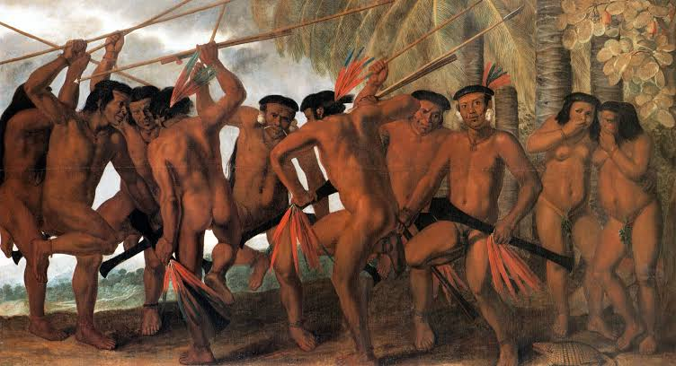

Período Pré-Cabralino
Por volta do ano 1000, a maior parte do atual litoral brasileiro, incluindo o território da atual cidade do Rio de Janeiro, foi invadida por povos tupis procedentes da Amazônia.
Curiosidades: Os tapuias eram os habitantes do litoral da cidade do Rio de Janeiro.

No início do século XVI, o território da cidade do Rio de Janeiro era ocupado na sua maior parte pela tribo tupi dos tupinambás, também chamados tamoios. Uma das inúmeras aldeias tupinambás no território da atual cidade do Rio de Janeiro era a aldeia Carioca, cujo nome viria a se tornar, posteriormente, o gentílico da cidade.